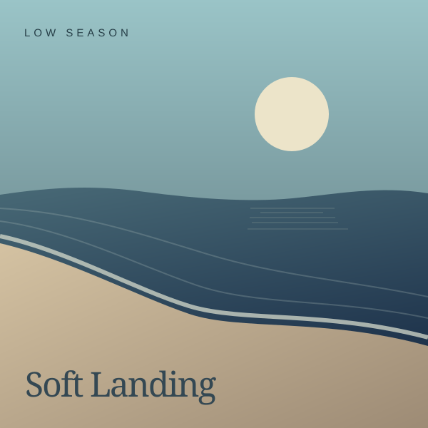

ASTRA THING / STUDY 03
A control panel.
Accepted scale · One new direction
Scale study
A solid control surface; the same warm finish for volume and selection.
Match the preview’s screen width to the physical display beside your monitor. This size is adjustable, not a calibrated measurement.
PLAYING
After hours

Tidal Memory
Low Season
Soft Landing
Your playlists
1 / 2
ASTRA THING
Sample